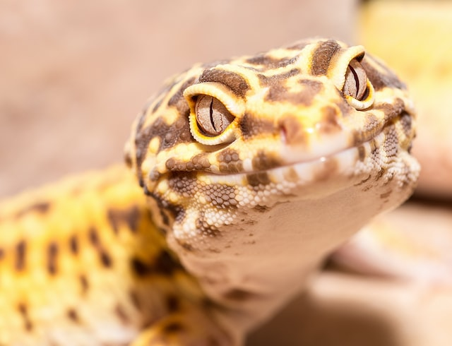
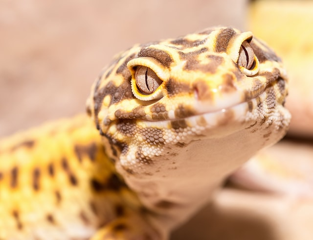

Pet Lizards
Here are pictures lizards. I have one of them as a pet
 

Photo by Andrey Tikhonovskiy on Unsplash
Photo by Andy Holmes on Unsplash
Facts about Leopard Geckos
- They get their name from leopard-like spots that cover the backs
- Leopard geckos are native to the Middle East, Paksista, India,a nd Afghanistan
- Leopard geckos are nocturnal so keeping the heat of the day while coming out at night to find food
Why Leopard Geckos make great pets
- They're incrediby easy to take care for to create a good home for them
- They're a great family pet and not aggressive by nature
- Not fussy eaters and will eat a vareity of insects dusted in vitamin and mineral powder
- A Leopard Gecko can easliy live for over 20 years if cared for propely
- Easy to breed on their own without you needing to do anything
Read more about Leopard Geckos